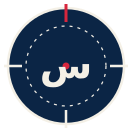
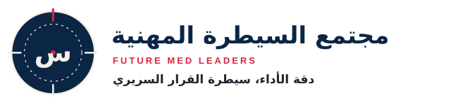

مجتمع السيطرة المهنية
دقة الأداء، سيطرة القرار السريري
FUTURE MED LEADERS
01 / لوحة الألوان الرسمية
الكحلي الأساسي#0B2545
الكحلي الثانوي#13315C
الأحمر — إشارة القرار#D7263D
الورقي الدافئ#F4F0E6
الحبر النصّي#20262E
02 / الشعار وتنوعاته
الشعار المختصر
للأيقونات والصور الرمزية.
النسخة العكسية
على الخلفيات الكحلية والداكنة.

الشعار الأفقيللمستندات والتوقيع والعروض.
دقة الأداء
سيطرة القرار السريري — Future Med Leaders
03 / نظام الخطوط
تجوال — Tajawalللعناوين والنصوص العربية، مع أوزان 400 و500 و700 و800.
IBM Plex Monoلأرقام الإصدارات والرموز والبيانات القصيرة. لا يستخدم للنصوص الطويلة.
04 / منطق الشعار والاستخدام
- الدائرة المزدوجة تشير إلى عدسة المعايرة والتركيز، وتوحي بالدقة والتحقق.
- حرف «س» في المركز يربط العلامة باسم السيطرة، والنقطة الحمراء تمثل نقطة القرار.
- العلامة الحمراء العلوية إشارة انضباط وفارق بصري، وتبقى بقية العلامة محايدة.
- اترك حول الشعار مساحة فارغة لا تقل عن نصف قطر الحلقة الداخلية.
- لا تمدد الشعار ولا تغيّر نسبه أو ألوانه ولا تضف ظلالاً قوية أو زخارف.
- استخدم الأحمر للتنبيه ونقطة القرار فقط، لا كخلفية أساسية للمساحات الكبيرة.